Gallery
Human A-to-I editings in REDIportal
1500 million sites
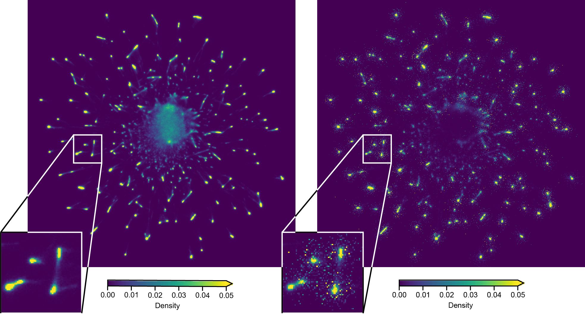1500 million sites (by groups)
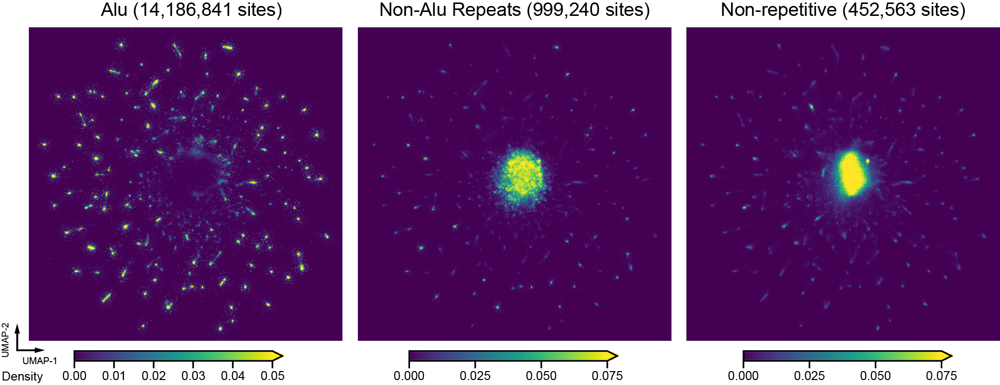Alu sites
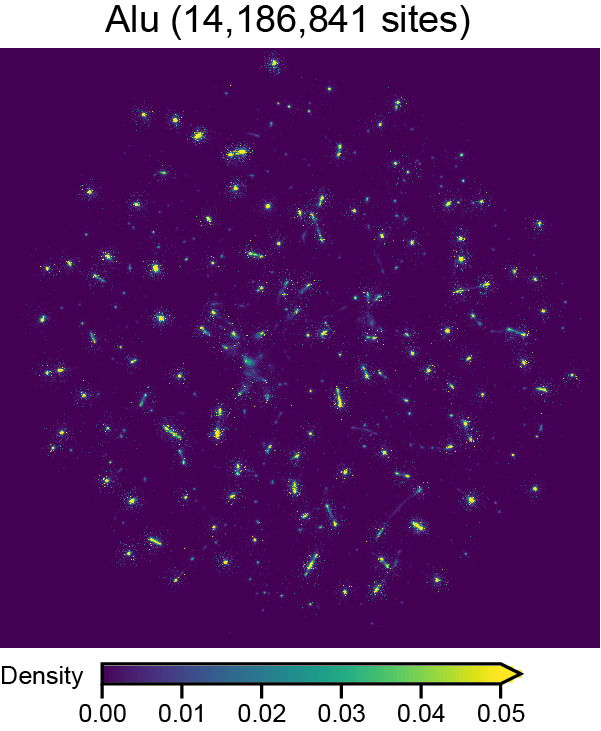non-Alu repeats

non-repeative
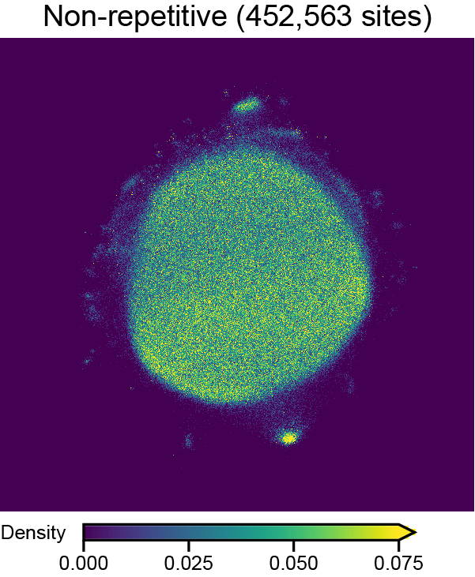m5C landscapes
Noc-treated HeLa
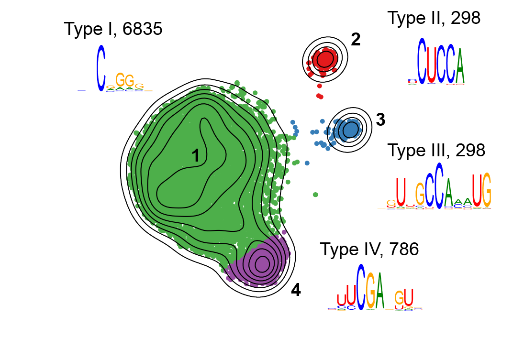Human oocytes
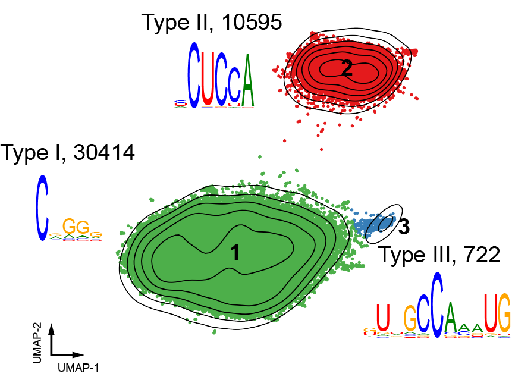Developmental stages (one-by-one)

Developmental stages (together)
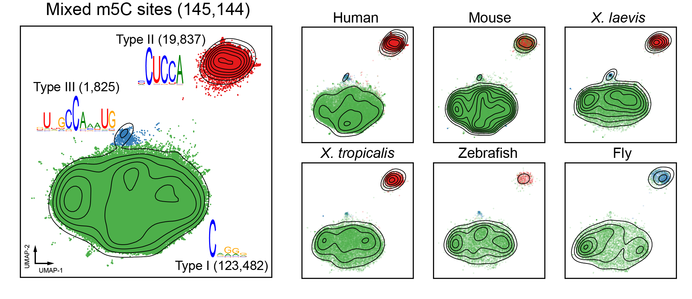m6A methods comparison

xPore data
Before phase matching
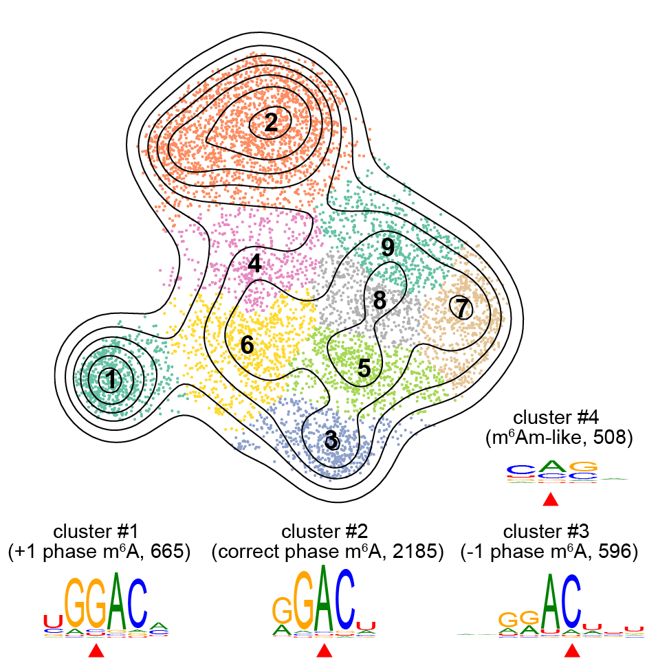After phase matching
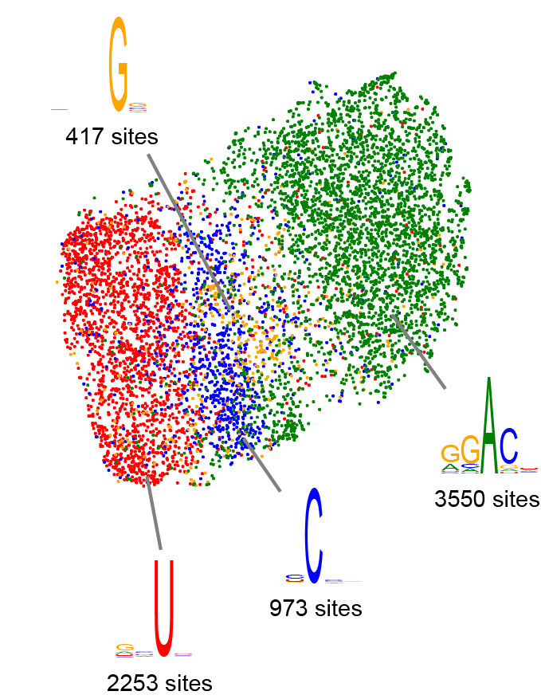RNA-seq variants
A bases
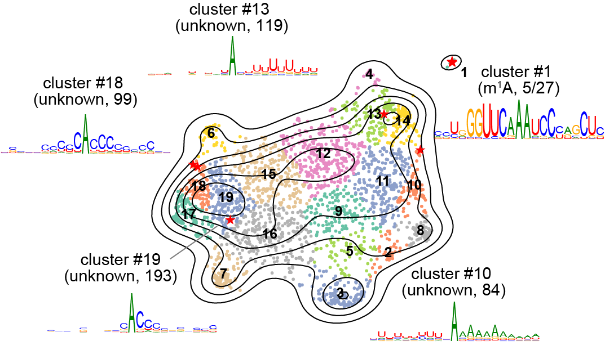U bases

C bases
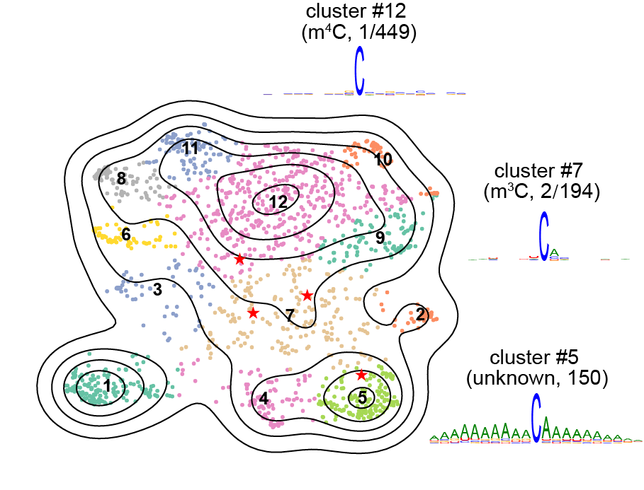G bases